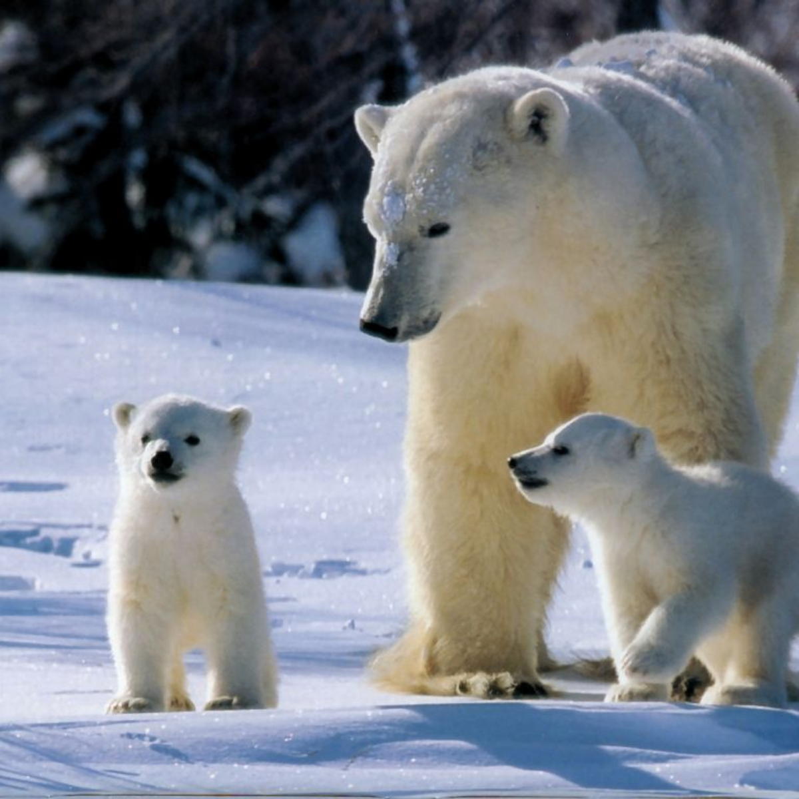
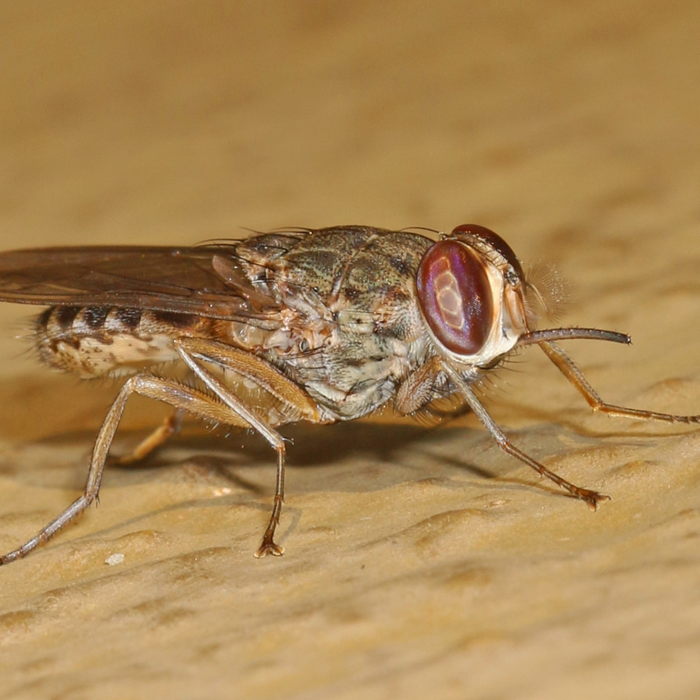
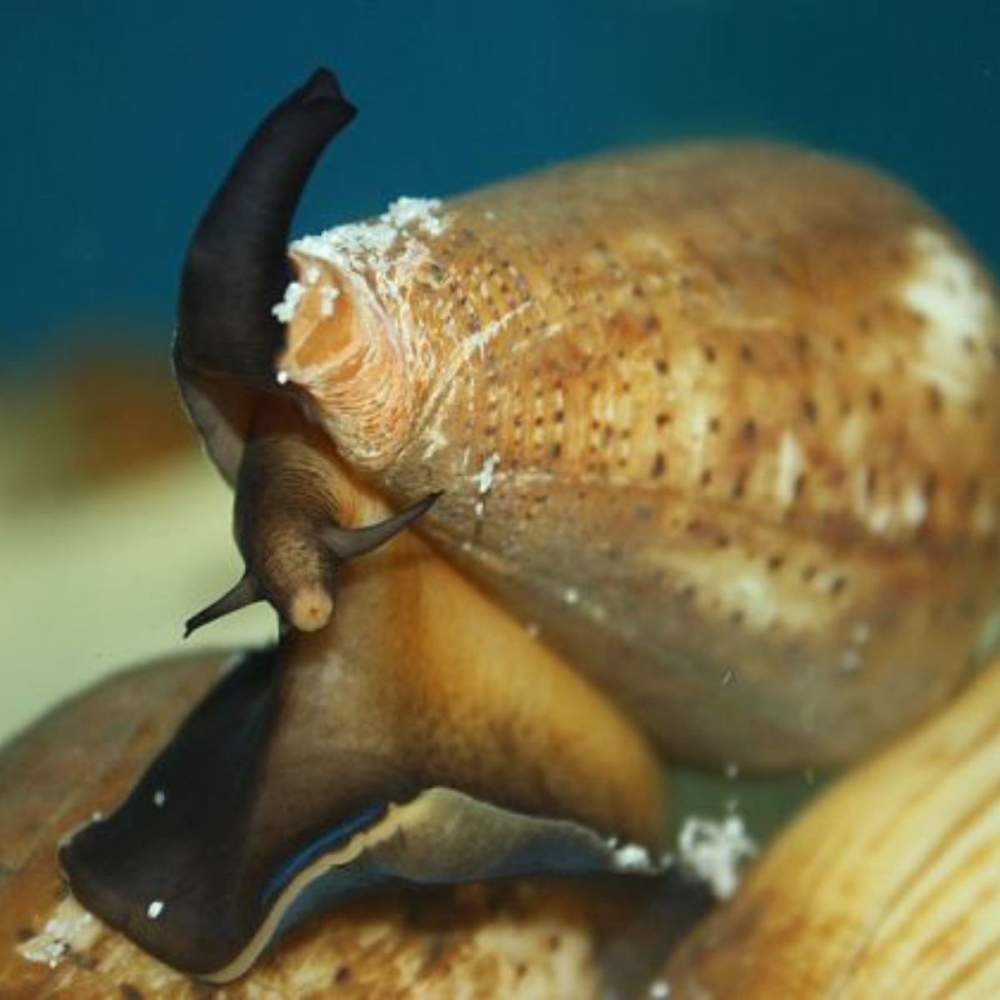

1. Szúnyog
 4. Elefánt
4. Elefánt

1. Szúnyog
 2. Jegesmedve
 3. Cecelégy
4. Elefánt
 5. Viziló
5. Viziló
 6. Fekete mamba
6. Fekete mamba
 7. Kúpos csiga
8. Nyílméreg béka
 9. Bordás krokodil
9. Bordás krokodil
 10. Kékgyűrűs polip
10. Kékgyűrűs polip